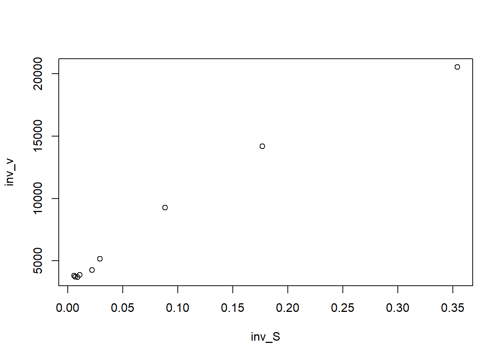
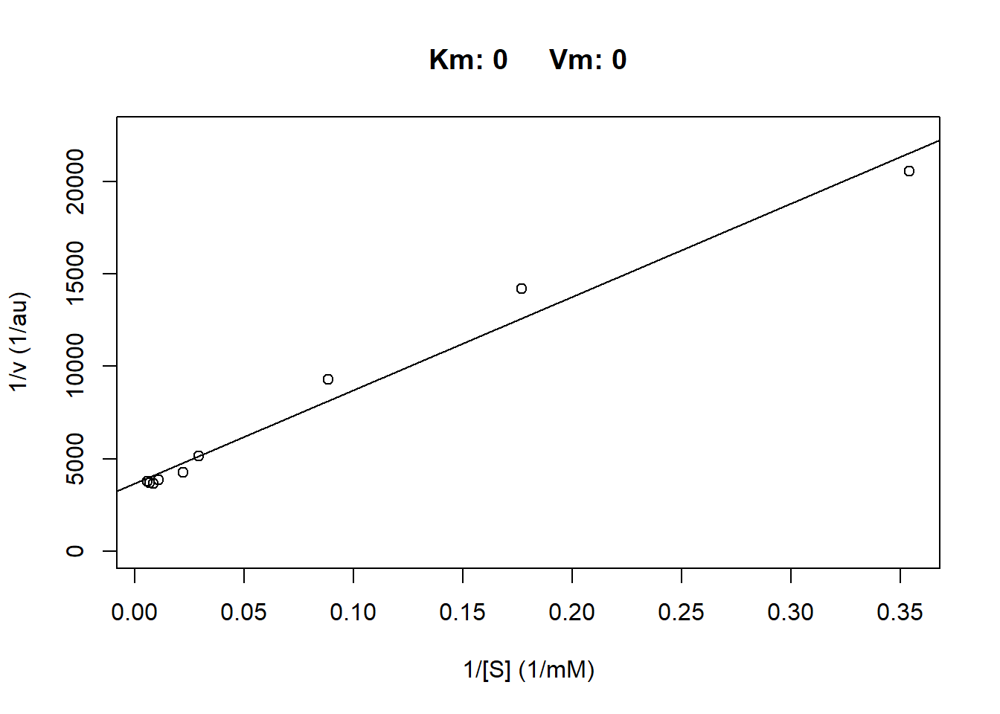
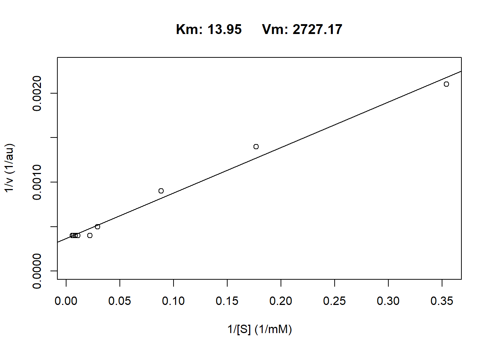

Chapter 5 Experiment 2: Concentration dependence of ion transport
In this experiment, you will investigate whether the ion transport process depends on the concentration of sodium ions on the mucosal side. To achieve this, you will measure I for a series of diluted Ringer’s solutions. The 1x Ringers you used so far was 113 mM NaCl.
5.1 Preparation
What is the concentration of Na+-ions in 1x Ringer’s?
To test if the ion transport depends on the concentration of Na+-ions, we will need the following solutions:
Calculate the different concentrations of Na+-ions yourself and enter them in the excel sheet. Plan how to prepare 200 mL of each of these solutions from 1x or 2x Ringer’s. Once you have a plan find an instructor to approve and hand you the solutions.
5.2 Take measurements
Empty chamber
Using the 0x solution, wash the chamber on the mucosal side 3 times (wait 2 minutes in-between).
Measure I and note it in your excel sheet.
Empty the chamber and add the solution with thge next higher concentration.
Wait 1 minute
Measure I and note it in your excel sheet.
Repeat step 4-6 for each of the solutions in order of increasing Na+-ion concentration.
At the end go back to 1x Ringer’s!
5.3 Data Analysis in R part 1
- Convert I to the flux of Na+-ions (J) using the following relationship (F: Farraday constant): \(J_{Na^+} = \frac {I_{Na^+}}{F} = \frac {1\frac {C} {s}} {96500 \frac {C} {mol}}\)
- Plot J as a function of Na+-concentration.
plot(x = data2$Na_concentration, y = data2$J,
xlab = expression("Na"^"+"*"-concentration (mmol/L)"), ylab = expression("Na"^"+"* "-flux (mol/s)"))Figure 5.1: Transport kinetics of the frog skin
5.4 Discussion part 1
Have you seen a curve like that before? What is it called?
What kind of information can you extract from these curves?
5.5 Data Analysis in R part 2
Together: use two methods to extract Vmax and Km.
Nonlinear curve fitting to the MM-curve.
Generate a Lineweaver Burk plot and extract both values.
5.5.1 Nonlinear curve fitting
- We have to define the equation we want to use. We are using the Michaelis Menten formula:
\(V_0 = \frac {V_{max} * S}{K_m + S}\)
- Next we will use the R curve fitting function nls() to find the Vmax and Km that will best fit our measured values to the Michaelis-Menten-equation. For that we have to provide some start values for the function to use.
- Now we will calculate the fitted curve for Na+-ion concentrations from 0 mM to 170 mM.
- Now we plot our real data and add the fitted values
plot(x = data2$Na_concentration, y = data2$J,
xlab = "[Na+] (mmol/L)", ylab = "Na+ flux (mol/s)")
test<-lines(Na_conc, J_fitted)Figure 5.2: Measured versus fitted data
- Now we only need to extract the values for Vmax and Km from the fitted equation.
## Vmax
## 3.021023e-10## Km
## 19.415695.5.2 Extract Vmax and Km from a Lineweaver-Burk-plot
The Lineweaver Burk plot is a linearization of the data to enable using a linear model to find Vmax and Km. This is achieved by taking the inverse of the substrate concentration and the velocity. As 0 will then be transformed to infinity, we have to subtract the 0 measurements of all and then exclude them.
data2$I_norm <- data2$I - data2[1,"I"]
data2$J_norm <- data2$I_norm/96500
data_inv <- data.frame( inv_S = 1/data2$Na_concentration,
inv_v = 1/data2$J_norm)
plot(data_inv)
To extract Vmax and Km, we use the y-intercept as well as the slope from the linear model.
model <- lm(data_inv$inv_v[2:10]~data_inv$inv_S[2:10])
Vm <- 1/model$coefficients[1]
Km <- Vm * model$coefficients[2]
Vm## (Intercept)
## 0.0002736285## (Intercept)
## 13.83527In R there is also a pckage that does all of the above automatically:

## $Kms
## [1] 0
##
## $Vms
## [1] 0
##
## $R2s
## [1] 0.9808206
##
## $fitted_parameters
## Km Vm
## 0 0
##
## $inverse_data
## inv_S inv_v
## 2 0.3540 20531.915
## 3 0.1770 14191.176
## 4 0.0885 9278.846
## 5 0.0295 5160.428
## 6 0.0221 4269.912
## 7 0.0111 3860.000
## 8 0.0088 3683.206
## 9 0.0071 3711.539
## 10 0.0059 3799.213The package rounds all coefficients to two positions after the comma, which is why we get 0 for both. You can inspect the code behind the package with the command below:
The solution is to multiply J_norm so we get high enough numbers:
library(renz)
data <- data.frame( S = data2$Na_concentration,
v = data2$J_norm*10000000)
lb_results <- lb(data[2:10,])
## Km Vm
## 13.95 2727.175.6 Discussion part 2
Collect the results from all groups. Discuss the differences.
What does Km express?
What does Vmax express?
For the report: Give an estimate of how fast the transport (in % of Vmax) takes place when a frog is sitting in its watering hole, with a Na+-concentration of approximately 5 mmol/L.